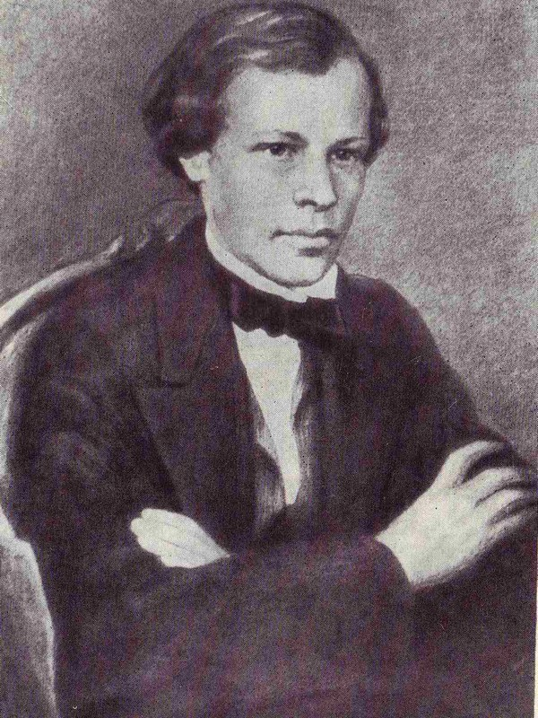
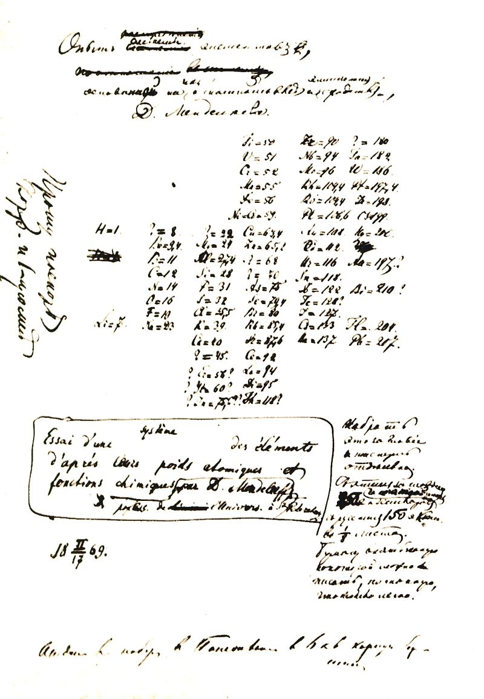
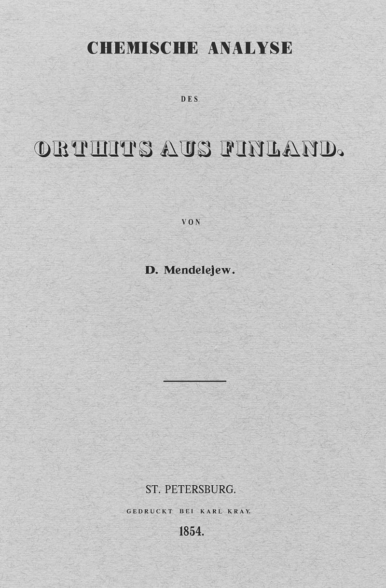
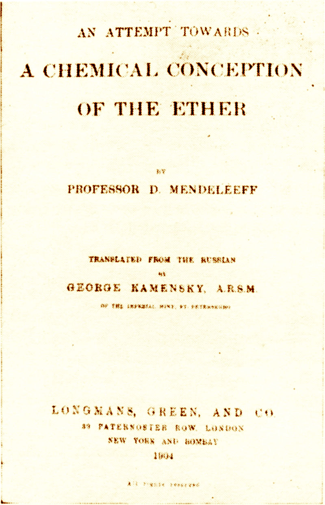
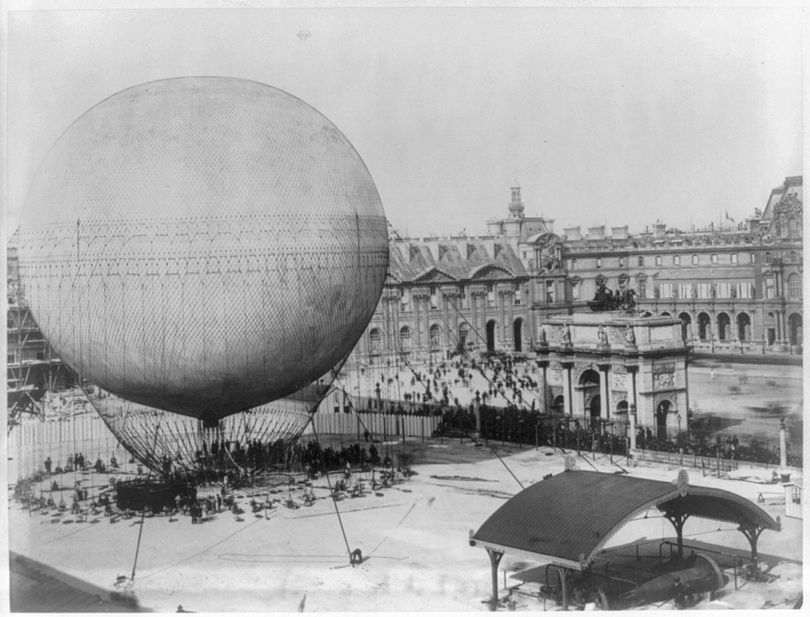

Биография
Дмитрий Иванович Менделеев родился 27 января 1834 года в Тобольске в семье Ивана Павловича Менделеева, в то время занимавшего должность директора Тобольской гимназии и училищ Тобольского округа, и Марии Дмитриевны Менделеевой. Дмитрий был в семье последним, семнадцатым ребёнком. Как было принято в то время в среде духовенства, по окончании семинарии троим сыновьям Павла Соколова были даны разные фамилии: Александру — Тихомандрицкий (по названию села), Василию — Покровский (по приходу, в котором служил Павел Соколов), а Иван, отец Дмитрия, в виде прозвания получил фамилию соседних помещиков Менделеевых.
Менделеев был женат дважды. В 1862 году он сочетался браком с Феозвой Никитичной Лещевой. Супруга была старше его на 8 лет (1826—1906). В этом браке родились трое детей: дочь Мария (1863), умершая в младенчестве, сын Владимир (1865—1898) и дочь Ольга (1868—1950). В конце 1876 года 42-летний Дмитрий Менделеев знакомится и страстно влюбляется в 16-летнюю Анну Ивановну Попову (1860—1942), дочь донского казака из Урюпинска. Во втором браке у Д. И. Менделеева родилось четверо детей: Любовь (1881—1939), Иван (1883—1936) и близнецы Мария (1886—1952) и Василий (1886—1922). В начале XXI века из потомков Менделеева был жив лишь Александр Каменский, внук его дочери Марии; он умер от последствий алкоголизма, не оставив потомков.
Д. И. Менделеев был тестем русского поэта Александра Блока, женатого на его дочери Любови.
Ученый был дядей русским учёным Михаилу Яковлевичу Капустину (профессор-гигиенист) и Фёдору Яковлевичу Капустину (профессор-физик), которые были сыновьями его старшей сестры Екатерины Ивановны Менделеевой (Капустиной).
Умер Д. И. Менделеев 20 января 1907 года в Санкт-Петербурге от воспаления лёгких в возрасте 72 лет. Похоронен на «Литераторских мостках» Волковского кладбища. Он оставил более 1500 трудов, среди которых классические «Основы химии»— первое стройное изложение неорганической химии. Его именем назван 101-й химический элемент — менделевий.
Наука
Д. И. Менделеев является автором фундаментальных исследований по химии, физике, метрологии, метеорологии, экономике, основополагающих трудов по воздухоплаванию, сельскому хозяйству, химической технологии, народному просвещению и других работ, тесно связанных с потребностями развития производительных сил России.
Менделеев исследовал (1854—1856) явления изоморфизма, раскрывающие отношения между кристаллической формой и химическим составом соединений, а также зависимость свойств элементов от величины их атомных объёмов.
Открыл в 1860 году «температуру абсолютного кипения жидкостей», или критическую температуру.
Сконструировал в 1859 году— прибор для определения плотности жидкости. Создал в 1865—1887 годах гидратную теорию растворов. Развил идеи о существовании соединений переменного состава.
Исследуя газы, нашёл в 1874 году общее уравнение состояния идеального газа, включающее, как частность, зависимость состояния газа от температуры, которую в 1834 году обнаружил физик Б. П. Э. Клапейрон.
В 1877 году выдвинул гипотезу происхождения нефти из карбидов тяжёлых металлов; а также предложил принцип дробной перегонки при переработке нефти.
Выдвинул в 1880 году идею подземной газификации углей. Занимался вопросами химизации сельского хозяйства, пропагандировал использование минеральных удобрений, орошение засушливых земель. Совместно с И. М. Чельцовым принимал в 1890—1892 годах участие в разработке бездымного пороха. Автор ряда работ по метрологии. Создал точную теорию весов, разработал наилучшие конструкции коромысла и арретира, предложил точнейшие приёмы взвешивания.
Работа над учебным пособием «Основы химии» позволила Менделееву задуматься над природой химических элементов. В результате этих размышлений 1 марта 1869 года был завершён самый первый целостный вариант Периодической системы химических элементов, который получил тогда название «Опыт системы элементов, основанной на их атомном весе и химическом сходстве», в котором элементы были расставлены по девятнадцати горизонтальным рядам и по шести вертикальным столбцам.
В мае 1856 года Д. И. Менделеев, вернувшись в Санкт-Петербург из Одессы, подготовил диссертационную работу под обобщённым названием «Удельные объёмы» — многоплановое исследование, своеобразную трилогию, посвящённую актуальным вопросам химии середины XIX века. Большой объём работы (около 20 печатных листов) не позволил издать её полностью. Опубликована была только первая часть, озаглавленная, как и вся диссертация «Удельные объёмы»; из второй части позднее был напечатан только фрагмент в виде статьи «О связи некоторых физических свойств тел с химическими реакциями»; третья же часть при жизни Д. И. Менделеева не была полностью опубликована — в сокращённом виде она была представлена в 1864 году в четвёртом выпуске «Технической энциклопедии», посвящённой стекольному производству.
Одна из гипотез Д. И. Менделеева сводилась к тому, что специфическим состоянием газов воздуха при большом разрежении и мог оказаться «эфир» или некий газ с очень малым весом. Д. И. Менделеевым написано на оттиске из «Основ химии», на периодической системе 1871 года: «Легче всех эфир, в миллионы раз»; а в рабочей тетради 1874 года учёный выражает ещё более ясно ход мысли: «При нулевом давлении у воздуха есть некоторая плотность, это и есть эфир!». Тем не менее, среди его публикаций этого времени таких определённых соображений не высказано.
Д. И. Менделеев, поначалу априорно выдвинув идею о температуре, при которой высота мениска будет нулевой, в мае 1860 года провёл серию опытов. При определённой температуре, которую экспериментатор назвал «абсолютной температурой кипения», нагретый в парафиновой ванне в запаянном объёме жидкий хлорид кремния (SiCl4) «исчезает», перейдя в пар. В статье, посвящённой исследованию, Д. И. Менделеев сообщает, что при абсолютной температуре кипения полный переход жидкости в пар сопровождается уменьшением поверхностного натяжения и теплоты испарения до нуля. Эта работа — первое крупное достижение учёного.
Теория растворов электролитов приобрела удовлетворительную направленность, только восприняв идеи Д. И. Менделеева, когда произошёл синтез гипотезы о существовании ионов в растворах электролитов с менделеевским учением о растворах.
Растворам и гидратам Д. И. Менделеевым посвящено 44 труда.
Занимаясь вопросами воздухоплавания, Д. И. Менделеев, во-первых, продолжает свои исследования в области газов и метеорологии, во-вторых — развивает темы своих работ, вступающих в соприкосновение с темами сопротивления среды и кораблестроения.
В 1875 году он разработал проект стратостата объёмом около 3600 м³ с герметической гондолой, подразумевающий возможность подъёма в верхние слои атмосферы. Д. И. Менделеев также спроектировал управляемый аэростат с двигателями. В 1878 году учёный, находясь во Франции, совершил подъём на привязном аэростате Анри Жиффара.
Летом 1887 года Д. И. Менделеев осуществил свой знаменитый полёт на воздушном шаре «Русский». Возможным это стало и благодаря посредничеству Русского технического общества в вопросах оснащения. Важную роль в подготовке этого мероприятия сыграли В. И. Срезневский и в особой степени изобретатель и аэронавт С. К. Джевецкий.